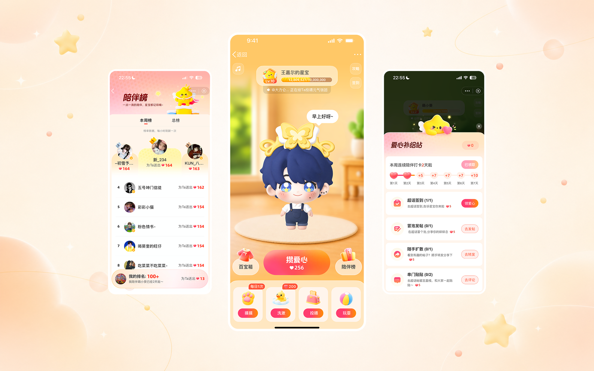
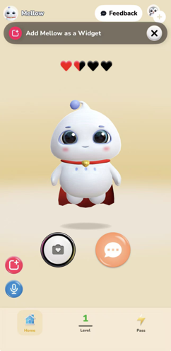
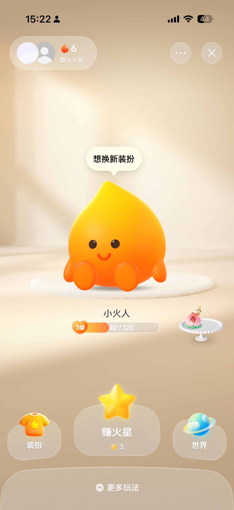
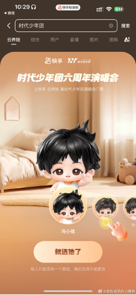
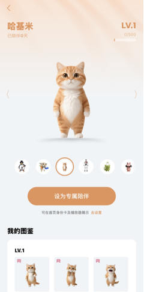
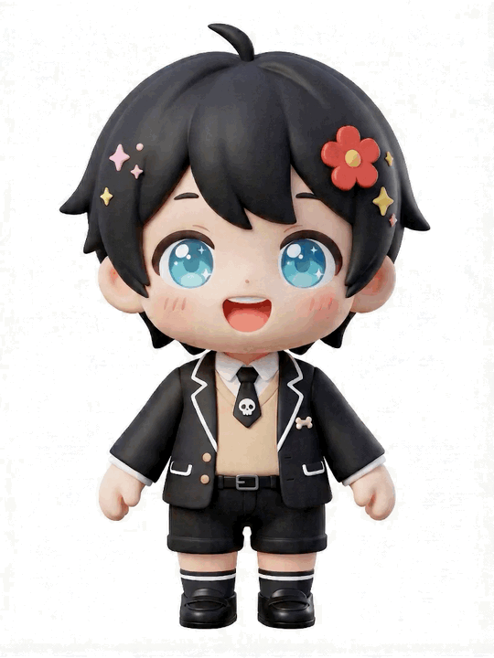
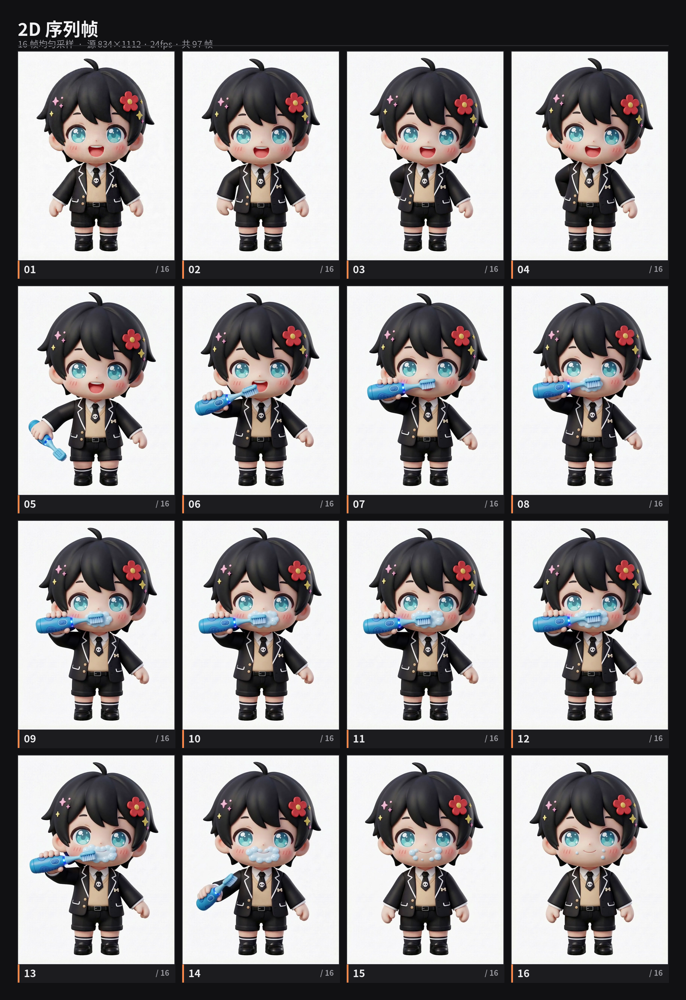
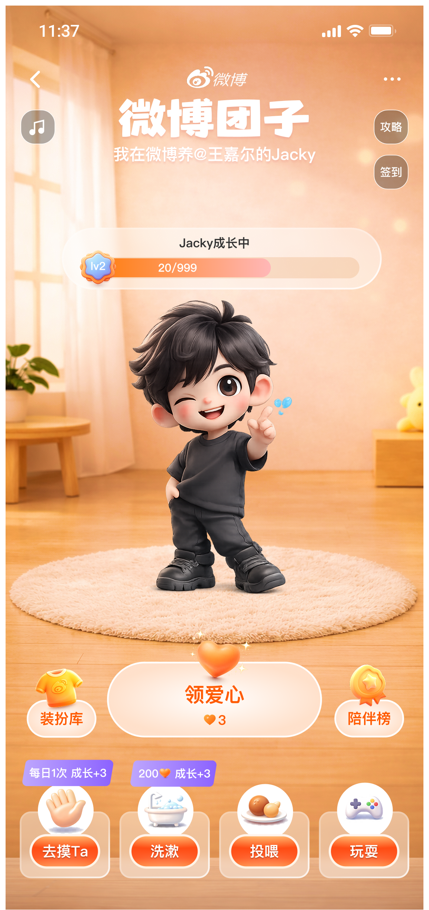
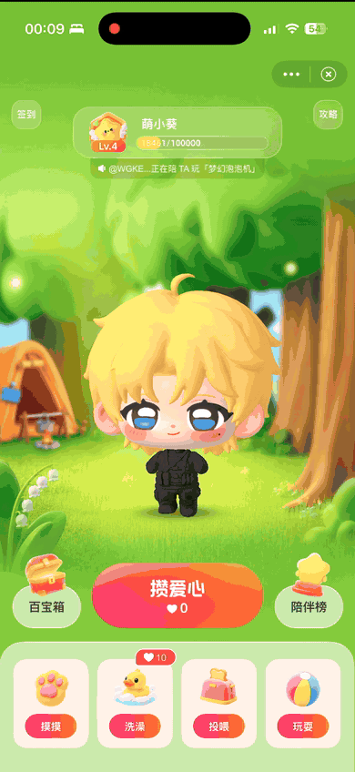

问题 1
任务反馈弱
用户完成签到、发帖、互动后，反馈往往停留在数字变化，缺少可感知的情绪回报。

01 项目概览
超话用户每天都会通过签到、发帖、评论、互动等方式为社区贡献活跃度，但这些行为本身偏工具化，反馈也较分散，用户很难持续感知“我的贡献对超话有什么影响”。
「超话星宝」希望把这些分散的社区行为转译成一个可感知、可反馈、可共同参与的养成系统：用户不只是完成任务，而是在和同好一起养成一个属于超话的星宝。
项目定位
超话星宝不是单个用户的宠物，而是整个超话共同维护的情绪载体。它把签到、发帖、互动、任务等行为转化为星宝成长、爱心贡献、动作反馈和集体荣誉。
星宝成长
社区行为被转化为可持续积累的成长进度。
爱心贡献
个人完成任务后，贡献能被明确记录和感知。
动作反馈
星宝通过状态和动作回应用户的参与行为。
集体荣誉
让粉丝看到个人努力如何汇入整个超话目标。

02 问题诊断
问题 1
用户完成签到、发帖、互动后，反馈往往停留在数字变化，缺少可感知的情绪回报。
问题 2
用户知道自己完成了任务，但不容易感受到自己的行为如何影响整个超话。
问题 3
单纯任务容易形成机械打卡，难以持续产生“我想回来看看”的理由。
03 设计机会
横向竞品对比
我把同类产品拆成对象定义、主导功能、生活感、众养模式和 AI 辅助五个维度，判断超话星宝不应该只做一个“可爱的宠物入口”，而要承接明星 IP、粉丝二创和社区任务关系，形成更有微博属性的共同养成体验。
Friends App
AI 伴侣

抖音
小火人 / 火花

快手
云养娃

QQ 音乐
伴听 / 宠物

| 维度 | Friends App（AI 伴侣） | 抖音（小火人 / 火花） | 快手（云养娃） | QQ 音乐（伴听 / 宠物） | 微博（超话星宝） |
|---|---|---|---|---|---|
| 对象定义 | 懂我的 AI 灵魂 | 朋友关系的量化符号 | 娱乐化的电子宠物 | 听歌伴随物 | 明星 / IP / 粉丝二创的微博分身 |
| 主导功能 | 纯对话 | 聊天标识 | 虚拟养成 + 任务体系 | 挂机升级；有机会获得线下演唱会门票和实物周边 | 生活互动 + 装扮 + AI 互动；皮肤商业化 |
| 生活感 | 弱，仅文字 / 语音 | 无，仅图标 | 中，可以看到角色吃饭等行为 | 弱，以舞蹈动作为主 | 强，同步洗脸、刷牙、起居等日常节奏 |
| 众养模式 | 无，偏私密孤岛 | 无 | 弱，主要通过榜单连接 | 弱，主要通过榜单连接 | 强，社区图腾 + 全员供养 |
| AI 辅助 | 情感记忆 | 无 | 无 | 歌曲推荐 | AI 互动玩法 |
竞品分析中，我重点拆解了养成类产品和社区任务产品在加载动画、角色动作、新手引导、成长值提示、任务完成反馈、升级庆祝动效等场景中的处理方式。最终判断：超话星宝不能只复制“单人宠物养成”，而要放大微博超话独有的粉丝群体关系。
用萌宠反馈承接签到、发帖、任务等高频行为
用共同成长强化粉丝群体目标和身份认同
用角色动作制造即时情绪奖励和停留动机
用可运营的形象/道具/动作体系承接商业化
04 设计策略
策略一
把签到、发帖、互动、任务等行为统一映射为爱心、成长值和阶段变化。
策略二
通过表情、动作、状态、成长变化，让用户感受到“我的行为产生了影响”。
策略三
用通用动作体系、成长阶段和状态规则，支持更多超话复用，而不是每个超话单独定制一套角色。
项目前期面临一个关键选择：如果只做少量星宝形象，2D 序列帧可以快速做出细腻表现；但项目目标是支持百量级明星 IP 扩展，需要同时考虑动作复用、快速适配、后续运营和工程稳定性。
我推动设计侧对 AI 工具、2D 序列帧工作流和 3D 骨骼绑定方案进行可行性验证，最终选择以 3D 骨骼绑定为主要落地方案，并配合标准化动作清单与角色/道具分离原则降低后续迭代成本。
GLB（3D 模型网格 + 骨骼绑定数据 + 贴图、材质 + 动画关键帧）
前期绑定成本更高，但动作可复用、扩展性更强，更适合多明星形象和长期运营迭代。

PNG序列图
单个动作表现可控，但面对大量 IP、动作扩展和后续修改时，人力投入与维护成本过高。

05 核心方案
养成闭环
我梳理了用户进入主流程、任务与爱心获取流程、喂养互动流程、成长升级流程，确保用户能理解“做什么能获得爱心”“爱心如何照顾星宝”“星宝如何成长”。
完成社区行为
获得爱心 / 成长值
星宝状态变化
用户获得情绪反馈
继续签到 / 发帖 / 任务


AIGC 视觉概念探索
在高保真细化前，我先用 AIGC 与快速拼装方式验证主界面氛围、星宝角色位置、任务入口和成长反馈，帮助团队在短周期内对“角色形象 + 超话任务 + 养成反馈”的组合达成共识。
3D 形象 AI 探索流程

主界面（高保真交互稿）

首页框架
先确定首屏信息层级，再进入细化设计
首页需要同时承载星宝角色、成长状态、任务入口、互动行为和运营入口。我先梳理不同框架方案，确认哪些信息必须首屏可见、哪些操作需要保持高频触达，避免后续视觉细化时只强调氛围而削弱任务转化。

基于首页框架继续推导上推菜单、半蒙层抽屉和榜单页，统一高频场景的信息层级与操作反馈。
新手引导
新用户第一次进入时，需要在很短时间内理解星宝与超话的关系、爱心的来源，以及互动会带来的反馈。引导不做长说明，而是通过首屏状态、任务入口和首次互动，把用户自然带入养成闭环。
喂养互动流程
我围绕摸 ta、投喂、洗漱、玩耍拆解了交互节点：用户触发、道具出现、动作播放、状态变化、爱心消耗或奖励反馈。每个行为都需要有清晰的操作前因和情绪后果。

任务、爱心与成长体系
任务系统承担行为转化，爱心承担情感化资源，成长体系承担长期目标。我将三者串联起来，让用户完成超话行为后能立即看到爱心变化，并通过成长值、阶段节点和升级庆祝感知集体努力的结果。

角色动作体系
星宝的生命感来自动作反馈。我将动作拆为“状态”和“瞬态”两类，并进一步明确触发条件、播放优先级、打断规则和回落状态，帮助设计、动效和开发在同一套逻辑下协作。
状态
有持续时长的角色行为，期间触摸不中断状态，一期：吃饭 / 睡觉 / 看书
| 状态名 | 触发条件 | 持续时长 | 气泡文案 | 优先级 |
|---|---|---|---|---|
| 吃饭 | 8:00~8:30 / 12:00~13:00 / 18:00~19:00 时段自动触发 | 30min / 1h | “Ta在吃饭哦” | 最高 |
| 睡觉 | 00:00~7:00 / 22:00~00:00 自动触发 | 9h | “嘘~Ta在睡觉” | 最高 |
| 健身 | 随机触发（每天最多1次） | 30min | “Ta在锻炼中~” | 普通 |
| 看书 | 随机触发（每天最多1次） | 30min | “Ta在学习呢” | 普通 |
| 刷微博 | 随机触发（每天最多1次） | 30min | “Ta沉迷刷微博中” | 普通 |
1. 允许连续操作同一类，例如连续点击洗漱，判断爱心值，爱心值充足时连续扣除爱心并增加成长值。
2. 喂养互动动画中，如触摸 / 洗漱播放中，点击投喂 / 玩耍可直接打断当前动画。
瞬态
几秒内完成的角色动作，无状态时自动循环播放，一期：打招呼 / 站立 / 打瞌睡
| 瞬态名 | 触发条件 | 持续时长 | 循环顺序 |
|---|---|---|---|
| 打招呼 | 当天首次进入（非状态时段） | 一次性播放 | 第1步 |
| 站立 | 默认待机状态 | 持续 | 第2步 |
| 比心 | 站立态超过1分钟后自动触发 | 约3秒 | 第3步 |
| 打瞌睡 | 比心之后紧接播放 | 约3秒 | 第4步 |
状态 / 瞬态核心区别
区分长时间状态与短时间反馈，明确中断、恢复和触发规则
| 对比维度 | 状态（长时间） | 瞬态（短时间） |
|---|---|---|
| 持续时长 | 30min ~ 7小时 | 几秒 |
| 触摸是否中断 | 不中断 显示拒绝文案 | 中断 播放触摸反应 |
| 投喂是否中断 | 中断 执行投喂动画 | 中断 执行投喂动画 |
| 洗漱是否中断 | 中断 执行洗漱动画 | 中断 执行洗漱动画 |
| 玩耍是否中断 | 中断 执行玩耍动画 | 中断 执行玩耍动画 |
| 触发方式 | 时段自动 随机 | 无状态时自动循环 |
| 每天次数 | 吃饭3次 / 睡觉1次 / 随机状态1次 | 无限循环 |
| 中断后恢复 | 不恢复 回到站立态 | 不恢复 回到站立态 |
3D 动画落地与资产协作
采用 3D 骨骼绑定后，我进一步细化了投喂、洗漱、睡觉等动画的表现规则：通过角色动作、道具出现/移动/消失、外部特效和状态切换营造互动感，避免复杂绑定导致穿模或批量适配困难。
投喂
食物与角色分离，通过路径、遮挡和嘴部反馈模拟进食。
洗漱
用泡泡、水花和清洁道具增强照顾感，减少真实碰撞。
睡觉
用姿态、道具遮挡和循环动作稳定表达睡眠状态。
协作推进
汇总项目涉及的所有动作与动效并分类，推动游戏工程师与动效设计师确认实现方式、优先级和排期。
设计细节
把分散的粉丝行为转译为连续可见的共同贡献
为了避免星宝看起来只是单人宠物，我在首页加入实时跑马灯，把签到、投喂、互动和成长贡献以轻量消息流呈现。用户进入页面后能立刻看到“其他人也在照顾星宝”，从而感知超话成员共同参与的养成氛围。
实时动态
展示其他用户刚刚完成的投喂、互动或任务行为。
群体贡献
把个人行为汇入共同成长，让用户感知自己在参与集体养成。
状态反馈
跑马灯与星宝状态、成长值变化形成呼应，提升页面鲜活感。

全局交互稿
汇总核心页面、流程节点与动效拆解，帮助团队在同一份全局稿中对齐页面关系、交互状态和动效落地范围。
06 上线效果与复盘
线上效果

由于具体数据涉及内部口径，页面中不展示数值，而以指标方向和设计贡献呈现项目价值。
互动频率
通过摸 ta、投喂、洗漱、玩耍等高频互动，将任务完成后的停留行为继续延长。
停留与回访
通过成长值、升级庆祝和星宝状态变化，强化用户持续回到超话的理由。
情感连接
将个人数据行为转化为集体守护结果，提升粉丝的陪伴感与群体荣誉感。
规模化运营
通过 3D 骨骼绑定、动作分类和资产清单，为多明星 IP 快速适配提供基础。
这次项目的核心价值，是把超话中原本偏工具化的数据行为，重新包装成有角色、有反馈、有集体目标的情感化体验。对用户来说，星宝是一个可爱的萌宠；对超话来说，它是连接粉丝行为、留存经营和后续商业化的产品载体。